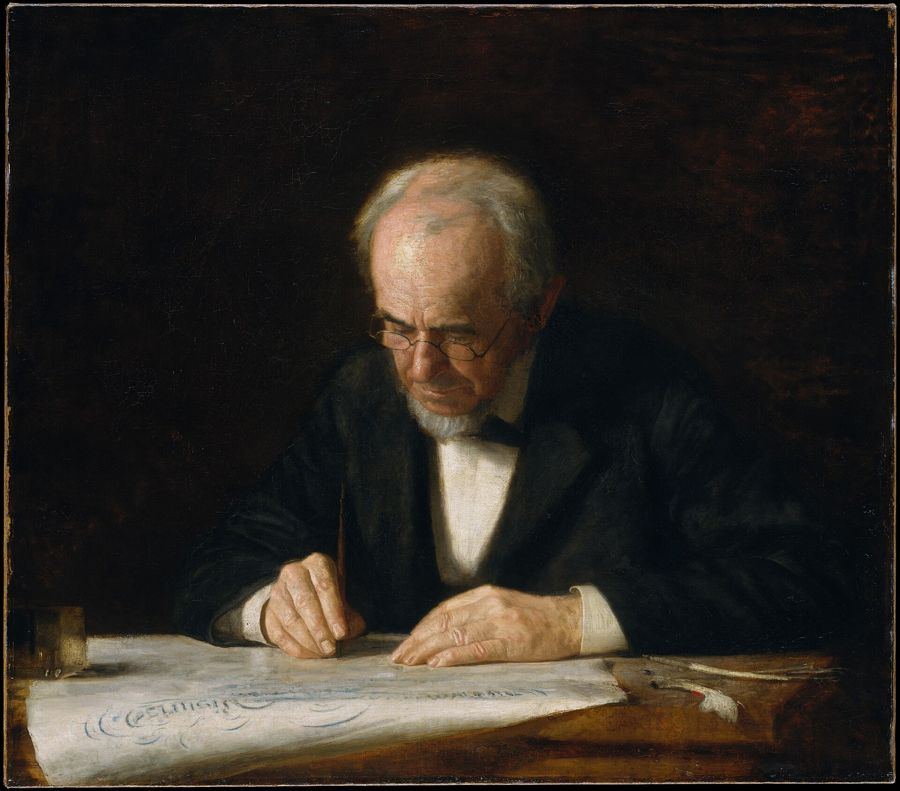

Introduction card
Expanding your vocabulary: words for every axis
Technological track, B1 towards B2, the lighter version. The version for the general track is here.
| Audience | Première and Terminale, technological pathway (STMG, STI2D, ST2S, STL and the other series). |
|---|---|
| Length | Two lessons of 55 minutes, timed for 52 minutes, each opened by a marked recap, two homework banks with answer keys and a short marked assessment. |
| Objectives | Learn four key words for each of the eight axes of the programme. Use common collocations. Say things politely and formally. Build words with a few prefixes and suffixes. Link ideas with simple linking words. Remember words with a notebook. Grammar tied to each step: the present simple and the -ing form, adjectives and nouns, but and because. |
| Link with the programme | The word banks follow the eight axes of the Première and Terminale syllabus (official bulletin of 22 January 2019): at least six axes are studied each year, and words are learnt in context, by axis, then reused from one sequence to the next. From the start of the 2026 school year, Terminale follows the new modern-languages syllabus (arrêté of 5 May 2025, BO no. 22 of 29 May 2025). The banks remain a useful map; teachers can also attach the words to the corresponding themes of the 2025 syllabus. |
| Link with the bac | The bac assesses four activities: understanding a recording, understanding a text, writing, and speaking. With the right words, you understand faster and you can explain your ideas clearly. |
| Before this workshop | Artificial Intelligence and Fahrenheit 451 and Through the Lens. The recaps draw on these sequences. |
| Materials | The gap-fill worksheet of the session (paper or ENT). A vocabulary notebook. |
| Adapted version | Adapted version (dys). |

Lesson 1 · Four words for each axis
Road map
Lesson of 55 minutes, timed for 52 minutes. 2 lessons.
- Marked recap while the register is taken 5 min
- The eight axes and their words 11 min
- Collocations and polite, formal English 8 min
- Exercises 1 to 3 14 min
- Game, Who Am I? 9 min
- Students write the homework in their planners 5 min
- Written record. Four words from one axis, each in a sentence of your own.
- Participation: everyone speaks at least once: a turn in Who Am I?, or one word from an axis.
- Homework for next lesson. Copy two axes, one sentence of your own for each word; the vocabulary and grammar exercises already given on the page.
Stopping point. End of this lesson.
Emergency exit · 8 min. If time runs short at this stopping point, we condense: we dictate a short written record (four words from one axis); a round of the class, one word from an axis each, so that everyone has spoken at least once; the homework (two axes with a personal sentence for each word, and the exercises on the page) is written on the board.
Marked recap · 5 minutes · out of 5
What you already know
While the register is taken, one student presents this recap, prepared at home. It draws on Artificial Intelligence and Fahrenheit 451 and Through the Lens. The class listens, then adds details if needed.
| Question | Marks |
|---|---|
| Who wrote Fahrenheit 451? | 1 mark |
| What do firemen do in Fahrenheit 451? | 1 mark |
| Who was Dorothea Lange, and what did she show in her photographs? | 1 mark |
| Grammar. Correct the mistake: “Montag burn books every day.” | 1 mark |
| Voice, eye contact, speaking without reading your notes. | 1 mark |
Recap answer key
- Who wrote Fahrenheit 451?
Ray Bradbury, in 1953. - What do firemen do in Fahrenheit 451?
They burn books. - Who was Dorothea Lange, and what did she show in her photographs?
An American photographer. She showed poor families and migrant workers during the Great Depression of the 1930s. - Grammar. Correct the mistake: “Montag burn books every day.”
Montag burns books every day. Present simple, third person singular: add -s. - Voice, eye contact, speaking without reading your notes.
A voice that reaches the back of the room, eyes on the class, notes checked only at a glance.
Why learn words by axis?
If you learn words in groups, by topic, you find them more easily when you need them. When the subject is about the internet, you open your “Citizenship and virtual worlds” list.
“Internet is bad, there are lies.”
“On social networks, fake news can go viral very fast, so we must check the source.”
The eight axes and their words
Four words per axis. Copy two axes into your notebook each week.
Axis 1 · Identities and exchanges
| Word | Meaning |
|---|---|
| to move abroad | to go and live in another country |
| a newcomer | a person who has just arrived |
| to feel at home | to feel comfortable in a place |
| a border | the line between two countries |
Axis 2 · Private and public space
| Word | Meaning |
|---|---|
| household chores | cleaning, cooking, washing at home |
| to share | to divide a task or a thing between people |
| remote work | working from home |
| equal rights | the same rights for everybody |
Axis 3 · Art and power
| Word | Meaning |
|---|---|
| a portrait | a painting or photo of a person |
| propaganda | messages used to make people support a leader |
| to criticise | to say what is wrong |
| street art | art painted on walls in the street |
Axis 4 · Citizenship and virtual worlds
| Word | Meaning |
|---|---|
| fake news | false information presented as news |
| personal data | information about you: name, address, habits |
| to go viral | to spread very fast online |
| to check a source | to verify where information comes from |
Axis 5 · Fictions and realities
| Word | Meaning |
|---|---|
| a hero | the main character, often brave |
| a dystopia | an imagined society where life is terrible |
| to imagine | to create a picture in your mind |
| a warning | a message about a danger |
Axis 6 · Scientific innovation and responsibility
| Word | Meaning |
|---|---|
| an invention | a new thing that someone creates |
| to recycle | to use materials again |
| renewable energy | energy from the sun, the wind or water |
| pollution | damage to air, water or land |
Axis 7 · Diversity and inclusion
| Word | Meaning |
|---|---|
| disability | a condition that makes some activities difficult |
| to welcome | to receive someone with kindness |
| unfair | not right, not equal |
| to respect | to treat someone well |
Axis 8 · Territory and memory
| Word | Meaning |
|---|---|
| a monument | a building or statue that remembers the past |
| to remember | to keep something in your mind |
| heritage | what we receive from the past |
| a ceremony | an official event with rituals |
Collocations: words that go together
| Say | Not | Example |
|---|---|---|
| make a decision | do a decision | The city made a decision to build a monument. |
| do research | make research | Scientists do research on clean energy. |
| take part in | make part in | I took part in a ceremony. |
| pay attention to | make attention to | Pay attention to fake news. |
| save energy | economise energy | We save energy by turning off the lights. |
Polite and formal English
| Everyday | Polite or formal |
|---|---|
| a lot of | many (countable), much (uncountable) |
| kids | young people |
| I want | I would like |
| get | receive, obtain |
| don’t | do not |
| I think | In my opinion, |
Grammar point. After like, love, enjoy, hate and after a preposition, use the -ing form: I enjoy taking part in debates. Thank you for listening.
Exercises · Lesson 1
Level 1Exercise 1 · Which axis?
Instructions. Write the number of the axis (1 to 8) for each word.
1. fake news
2. a monument
3. street art
4. recycle
5. a newcomer
6. household chores
Answer key
1. fake news: 4. 2. a monument: 8. 3. street art: 3. 4. recycle: 6. 5. a newcomer: 1. 6. household chores: 2.
Level 1Exercise 2 · The right verb
Instructions. Complete with: make, do, take, pay, save.
1. I want to part in the school debate.
2. Scientists research on renewable energy.
3. Please attention to the instructions.
4. We can energy at school.
5. The mayor will a decision tomorrow.
Answer key
1. take. 2. do. 3. pay. 4. save. 5. make.
Level 2Exercise 3 · Say it politely
Instructions. Rewrite each sentence in polite or formal English.
- I want a coffee.
- A lot of kids use TikTok.
- I think recycling is important.
- We don’t have time.
Answer key
- I would like a coffee, please.
- Many young people use TikTok.
- In my opinion, recycling is important.
- We do not have time.
Game · Who Am I? (10 minutes)
A student chooses a word from the cards and gives three clues, one at a time. The class guesses. One point for a guess after the first clue, half a point after the second.
- “I am false. I look like news. I spread fast online.”
- “I am a statue or a building. I help people remember. You find me in town squares.”
- “I come from the sun or the wind. I am clean. I never run out.”
- “I am painted on walls. Sometimes I criticise leaders. Banksy makes me.”
Game answer key
- fake news
- a monument
- renewable energy
- street art
Homework · Lesson 1
To do at home before the next lesson. Write it in your planner now.
- Notebook. Copy two axes. For each word, write one sentence about your own life.
- Vocabulary. Complete with: border, warning, unfair, share, invention, welcome.
- The smartphone is an amazing ______.
- We cross the ______ between France and Spain.
- The film is a ______ about the dangers of screens.
- At home, we ______ the household chores.
- It is ______ to pay women less than men.
- The village decided to ______ the refugees.
- Grammar: present simple. Put the verb in the right form.
- My sister (recycle) ______ all her plastic bottles.
- Fake news (go) ______ viral very fast.
- He (not / check) ______ his sources.
- Grammar: -ing form. Complete: I enjoy (visit) ______ monuments. Thank you for (listen) ______.
Homework answer key
2. a. invention. b. border. c. warning. d. share. e. unfair. f. welcome.
3. a. recycles. b. goes. c. does not check (doesn’t check).
4. visiting; listening.
1. Personal sentences. Example: “My grandmother moved abroad when she was twenty.”
Lesson 2 · Build words and link ideas
Road map
Lesson of 55 minutes, timed for 52 minutes. 2 lessons.
- Marked recap while the register is taken 5 min
- Prefixes, suffixes, linking words, images 9 min
- Exercises 4 to 6 14 min
- Game, Word Families 7 min
- Reuse: short paragraph and one-minute oral 9 min
- Short marked assessment, then homework in planners (or at the start of the next lesson) 8 min
- Written record. One built word and one linking word, or the opening of the short paragraph.
- Participation: everyone speaks at least once: a turn in Word Families, or one sentence of the one-minute oral.
- Homework for next lesson. Review the notebook in three days and in a week; the lesson 2 exercises; a paragraph of 80 words on another axis.
Stopping point. End of this lesson.
Emergency exit · 8 min. If time runs short at this stopping point, we condense: we dictate a short written record (one built word and one linking word); a round of the class, one sentence each, so that everyone has spoken at least once; the homework (review the notebook in three days and in a week, and the exercises on the page) is written on the board.
Marked recap · 5 minutes · out of 5
What we did last time
One student presents this recap, prepared at home. It draws on lesson 1.
| Question | Marks |
|---|---|
| Name two axes and give two words for each. | 1 mark |
| Complete: to ______ research; to ______ part in. | 1 mark |
| Say it politely: “I want a ticket.” | 1 mark |
| Grammar. Correct: “She enjoy to recycle.” | 1 mark |
| Voice, eye contact, speaking without reading your notes. | 1 mark |
Recap answer key
- Name two axes and give two words for each.
For example: Territory and memory, a monument, heritage; Citizenship and virtual worlds, fake news, personal data. - Complete: to ______ research; to ______ part in.
to do research; to take part in. - Say it politely: “I want a ticket.”
I would like a ticket, please. - Grammar. Correct: “She enjoy to recycle.”
She enjoys recycling. - Voice, eye contact, speaking without reading your notes.
A voice that reaches the back of the room, eyes on the class, notes checked only at a glance.
Build words
| Add | Meaning | Examples |
|---|---|---|
| un-, dis- | not, opposite | unfair, unequal, dislike, disagree |
| re- | again | recycle, rebuild, rethink |
| -ment, -tion | makes a noun | government, pollution, invention |
| -ful | full of | useful, harmful, peaceful |
| -less | without | useless, homeless, powerless |
Grammar point. An adjective comes before the noun and never takes -s: useful inventions, not usefuls inventions. A noun comes after a, the, my: the pollution of the river.
Link your ideas
| To | Use | Example |
|---|---|---|
| add | and, also, moreover | Moreover, it saves money. |
| oppose | but, however | However, it is expensive. |
| explain why | because, because of | because of pollution |
| give a result | so, that is why | so we must act |
| give an example | for example, such as | such as Instagram |
Words as pictures
English uses images to talk about ideas: a flood of information (too much information), to build bridges (to bring people together), a double-edged sword (something with good and bad sides). Use one image in a paragraph, not more.
Remember words
- Write a sentence about your own life for each new word.
- Review your notebook on day 1, day 3 and day 7: hide the word, find it again.
- Say the words aloud, record them on your phone and listen again.
Exercises · Lesson 2
Level 1Exercise 4 · Build the word
Instructions. Add a prefix or a suffix to the word in brackets.
1. It is to pay women less. (fair)
2. Plastic is to the ocean. (harm)
3. Air is a problem in big cities. (pollute)
4. We paper at school. (cycle)
5. This app is without internet. (use, without)
Answer key
1. unfair. 2. harmful. 3. pollution. 4. recycle. 5. useless.
Level 2Exercise 5 · Link the ideas
Instructions. Complete with: but, because, so, such as, moreover.
1. I like social networks, I do not trust everything.
2. The beach was closed the water was polluted.
3. Cars pollute, I go to school by bike.
4. Platforms Snapchat collect personal data.
5. Remote work saves time. it saves money.
Answer key
1. but. 2. because. 3. so. 4. such as. 5. Moreover,
Level 3Exercise 6 · Improve a short text
Instructions. Rewrite with three words from the cards, two linking words and one image.
Phones are good. Phones are bad. We use them a lot. Fake things on them.
Answer key
Phones are a double-edged sword. They are useful because we can talk to friends and check information. However, fake news can go viral very fast, and apps collect our personal data. So we must check our sources.
Words from the cards: fake news, go viral, personal data, check our sources. Linking words: because, However, So. Image: a double-edged sword.
Game · Word Families (7 minutes)
In pairs, two minutes per word: write as many words of the family as you can. One point per correct word.
Words: use, fair, pollute, invent.
Game answer key
- use: useful, useless, user, reuse, usefully.
- fair: unfair, fairly, fairness, unfairly.
- pollute: pollution, polluted, polluter, pollutant.
- invent: invention, inventor, inventive, reinvent.
Reuse · write, then speak
A short paragraph (80 to 100 words)
Subject: Is recycling enough to protect the planet? (axis 6) Success criteria: four words from the cards, two linking words, one image, verbs in the present simple.
Model answer
In my opinion, recycling is important, but it is not enough. At school, we recycle paper and plastic bottles, and that is a good habit. However, pollution comes mostly from factories, cars and planes. Moreover, many products are useless and we throw them away very fast. So we must also buy less, use renewable energy and take the train. Protecting the planet is not one small action: it is a bridge we build together, step by step.
Words: recycle, pollution, useless, renewable energy. Linking words: but, However, Moreover, So. Image: a bridge we build together.
The one-minute oral
Present one axis in one minute: its name, three words, one example from class, your opinion. A classmate times you.
Model answer
“I chose the axis Citizenship and virtual worlds. It is about how the internet changes our lives as citizens. For example, fake news can go viral in a few minutes. Moreover, apps collect our personal data. In my opinion, the internet is a double-edged sword: it helps us to learn, but we must always check the source.”
About 60 words: one minute at a calm pace.
Short marked assessment · 10 minutes · out of 10
Check your progress
In class, without notes. Vocabulary and grammar from both sessions.
- Vocabulary (2 marks). Give the axis of each word: a border, propaganda, recycle, a monument.
- Collocations (2 marks). Complete: to ______ a decision; to ______ attention to; to ______ energy; to ______ part in.
- Word building (2 marks). Give the opposite or the noun: fair (opposite), use (adjective “without”), pollute (noun), invent (noun).
- Grammar: present simple (2 marks). Correct: “He check his phone every minute.” “Fake news don’t help democracy.”
- Grammar: linking words (2 marks). Join with because, then with so: “The river is polluted. Fish are dying.”
Assessment answer key
- a border: 1; propaganda: 3; recycle: 6; a monument: 8. Half a mark each.
- make; pay; save; take. Half a mark each.
- unfair; useless; pollution; invention. Half a mark each.
- He checks his phone every minute. Fake news does not help democracy (news is uncountable, so singular). One mark each.
- Fish are dying because the river is polluted. The river is polluted, so fish are dying. One mark each.
My bristol flashcards · how to use them
Principle: each student makes their own cards by hand, on bristol cards. Writing the word is already a way of learning it. The pack stays in their bag: they can revise anywhere, with no screen. The notebook in four columns and the spaced review on this page go together with the bristols.
Materials
A7 bristol cards (74 × 105 mm), or A6 bristols cut in half. Coloured felt-tip pens. An elastic band or an envelope for the pack. A small cardboard box with three compartments for practice (a shoe box with two dividers is enough). You can also print the blank template and cut it out.
Blank template: PDF · DOCX · ODT.
Colour code
| Category | Pen colour |
|---|---|
| Vocabulary (the word banks) | green |
| Grammar (verb patterns, the passive, concession) | red |
| Linkers | blue |
| Word formation (prefixes and suffixes) | purple |
When to make the cards in the sequence
| When | Cards to make |
|---|---|
| During lesson 1 | A few cards, as the work goes on, for the words and collocations that are still fragile (one per axis if needed). |
| During lesson 2, and before the short assessment | Add prefixes, suffixes and linkers; finish the pack, then practise in pairs, with three boxes. |
Practice in pairs, with three boxes
A shows the front, B gives the meaning and a sentence. If the card is right, it moves on one box. If it is wrong, it goes back to box 1. Target before the assessment: 12 cards in box 3.
Items to put on the cards (not a ready-made deck)
Choose the words that are still fragile. The general track offers six words or phrases per axis; the technological track offers four. Suggested fronts, among others:
- Axis 1 · Identities and exchanges: a sense of belonging; to settle (in); a culture shock (general); to move abroad; a newcomer; a border (technological).
- Axis 2 · Private and public space: gender equality; household chores; remote work.
- Axis 3 · Art and power: to commission; propaganda; to glorify; street art.
- Axis 4 · Citizenship and virtual worlds: misinformation; personal data; cyberbullying; fake news; to go viral; to check a source.
- Axis 5 · Fictions and realities: a dystopia; a cautionary tale; a role model; a warning.
- Axis 6 · Scientific innovation and responsibility: a breakthrough; to carry out research; ethical concerns; renewable energy; pollution.
- Axis 7 · Diversity and inclusion: disability; accessibility; to face discrimination; to welcome.
- Axis 8 · Territory and memory: heritage; a memorial; to commemorate; a monument.
- Methods: collocations (to pay tribute to, to carry out research), formal register and the passive, prefixes and suffixes (mis-, under-, -able, -less, -ism), linking words (although, despite, whereas, because, so, but).
Homework · Lesson 2
To do at home before the next lesson. Write it in your planner now. The short assessment above comes in addition to this homework, never instead of it.
- Review. Write in your planner: review the notebook in three days and in a week.
- Vocabulary. Add un-, re-, -ful or -less: ______build, peace______, ______equal, home______.
- Grammar: adjectives. Correct: “They are usefuls tools.” “It is a problem important.”
- Grammar: but, because, so. Complete: I love street art ______ it is colourful. The museum was closed, ______ we visited the monument. Social networks are fun, ______ they can be dangerous.
- Writing. Write a paragraph of 80 words on another axis, with four words from its card.
Homework answer key
2. rebuild, peaceful, unequal, homeless.
3. They are useful tools (no -s on adjectives). It is an important problem (the adjective comes before the noun).
4. because; so; but.
5. Model, axis 8: “In my town there is a monument to the soldiers of the First World War. Every November there is a ceremony, and young people take part in it. In my opinion, it is important to remember the past because it is our heritage. Moreover, it helps us to build bridges between generations.”
1. Personal work, checked in class.
Keep going
- Artificial Intelligence and Fahrenheit 451: reality, fiction and responsibility, for axes 5 and 6.
- Through the Lens: Dorothea Lange, art and power, for axes 3 and 8.
- Big Brother Is Watching: Orwell and dystopia, for axes 4 and 5.
All texts, word lists, examples and exercises on this page were written for this session.